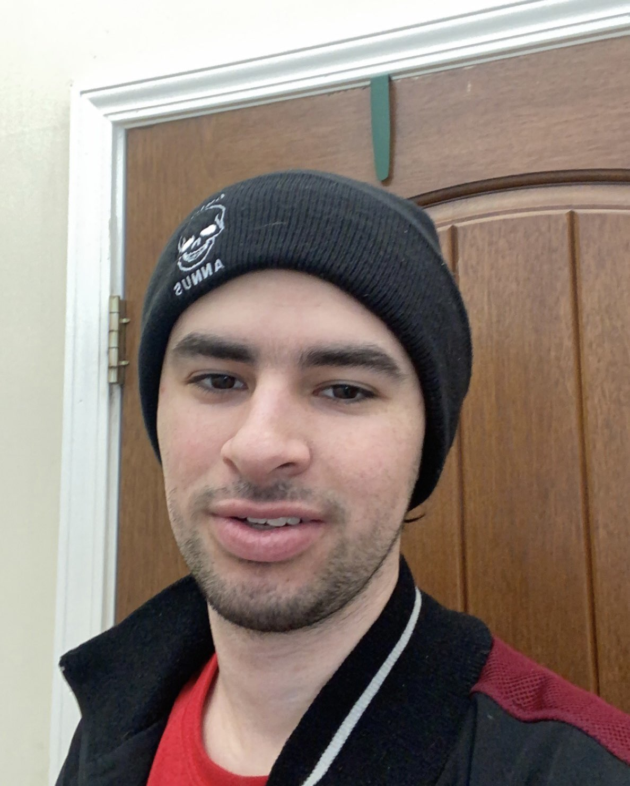

Estefan Valencia
This is a website about my favorite hobbies and activities

My Hobbies/Activites
Hang out with friends
- In my free time I like to hang out with friends and do whatever we feel like doing.
We'll do things like bowling, go to the mall, make something stupid, etc...
Play Games
- I also like to play all sorts of video games with friends I found online. Without them
playing with me, the games get kind of boring real quick.
Make Random Things
- My friends and I like to make random things on the spot whenever a good idea pops into
any one of our heads. Like recently, we made a tube and shoots potatos out kind of far.